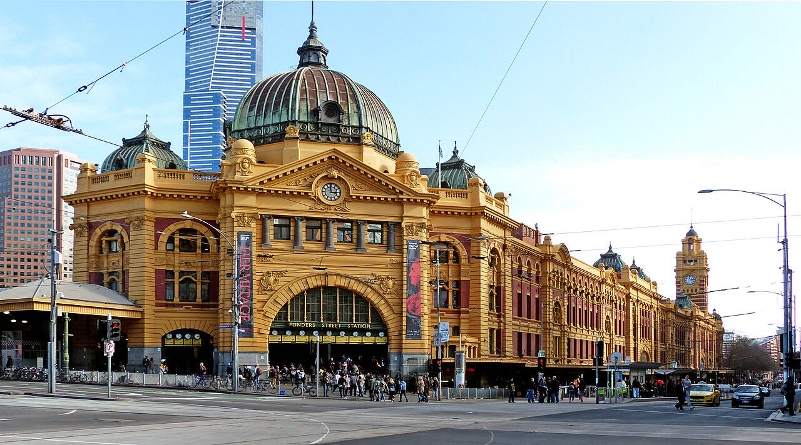
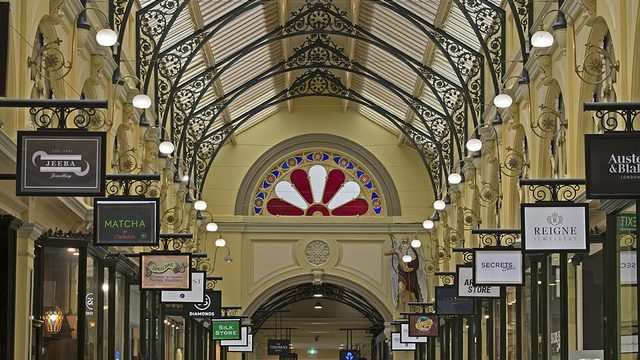

Вокзал Флиндерс-стрит
Bernard Spragg · CC0 1.0
Библиотека штата Виктория
Diliff · CC BY 2.5
Блок-Аркейд
Ymblanter · CC BY-SA 4.0
Площадь Федерации
Nick-D · CC BY-SA 4.0
Собор Святого Павла
JohnArmagh · CC BY-SA 3.0
Музей иммиграции
GordonMakryllos · CC BY-SA 4.0

Королевский пассаж
Рынок королевы Виктории
Dietmar Rabich · CC BY-SA 4.0